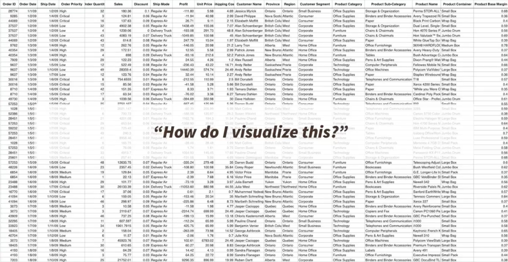
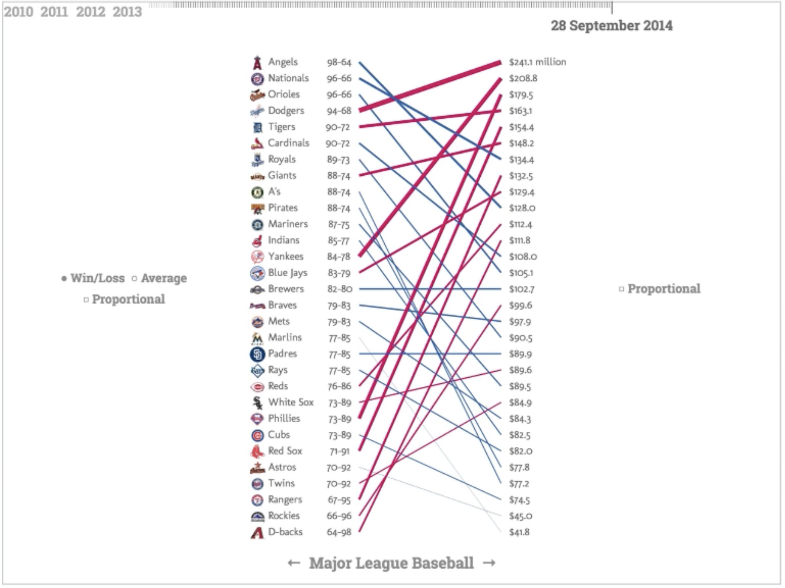
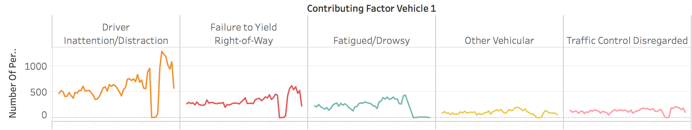

CS-GY 6313 - Information Visualization - Fall 2025
Claudio Silva
NYU Tandon School of Engineering
2025-09-12
Today’s Agenda
<<<<<<< HEAD
Learning Objectives:
Master the five fundamental graph types and when to use them
Apply expressiveness and effectiveness principles
Understand visual encoding theory (marks and channels)
Make informed chart selection decisions
Design effective scales and axes
=======
Learning Objectives: - Master the five fundamental graph types and when to use them - Apply expressiveness and effectiveness principles - Understand visual encoding theory (marks and channels) - Make informed chart selection decisions - Design effective scales and axes
>>>>>>> ad480f8c117cb325bd3ae0ca25bd1850ad383f4c
Acknowledgments
Special thanks to:
Prof. Enrico Bertini NYU Tandon School of Engineering
Course materials and pedagogical insights
Visualization design principles
Interactive visualization expertise
Prof. Jeff Heer University of Washington
Fundamental visualization theory
Perceptual effectiveness research
Vega-Lite and D3.js frameworks
This course builds upon their foundational contributions to visualization education and research.
The Chart Selection Challenge

The fundamental question: How do I visualize this data?
The central question: Given data and a task, which visualization technique will be most effective?
Chart type (bar, line, scatter, etc.)
Visual encoding (position, color, size)
Design choices (scales, axes, layout)
<<<<<<< HEAD
Two-Step Process
Step1: Decide what to visualize.
Tipically, data is represented in a table and you must SELECT attributes to create your visualization
The selected attributes can also be TRANSFORMED in order to generated useful information to answer the question
Step2: Choose/Design your visualization.
Your visualization can be selected from a set of existing visualizations
Based on well-defined principles, a novel visualization can be designed to answer the question
Question: Is it possible to create different representations of the same data? It is. However, some representations might not follow the best design guidelines
Slope charts can be an alternative to scatter plots

Slope Chart
Chart Selection Examples
Scenario 1: Monthly sales data for different product categories
Answer: Line chart (multiple series) - shows trends over time by category
Scenario 2: Customer satisfaction ratings across departments
Answer: Bar chart - compares quantitative values across categories
Scenario 3: Relationship between advertising spend and sales revenue
Answer: Scatter plot - explores correlation between two quantitative variables
Decomposing a chart: Marks and Channels
Marks:
Marks are the geometric primitives we use in a visualization
They are used to represent the itens of a dataset
Marks and channels determine effectiveness
Decomposing a chart: Marks and Channels
Channels:
Channels are the appearance of the marks
They are used to represent the attributes of a dataset
Channels encode data attributes
Principles: Expressiveness & Effectiveness
Expressiveness: The visual encodings must show all and only the facts in the data.
The most fundamental expression of this principle is that ordered data should be shown in a way that our perceptual system intrinsically senses as ordered. Conversely, unordered data should not be shown in a way that perceptually implies an ordering that does not exist. Violating this principle is a common beginner’s mistake in visualization.
Effectiveness: Information should be readily perceived
The importance of the attribute should match the salience of the channel; that is, its noticeability. In other words, the most important attributes should be encoded with the most effective channels in order to be most noticeable, and then decreasingly important attributes can be matched with less effective channels.
Expressiveness Violations

Line chart with categorical data implies false ordering
Problem: Ordered visual channel (line) with unordered data
Bar chart ordering suggests ranking where none exists
Skipping data exploration: Visualize without understanding the data
Chart junk: Adding visual elements that don’t encode information
Color overuse: Using color when position would be more effective
Ignoring scale effects: Not considering how scale choices affect perception
3D when 2D suffices: Adding dimensions that don’t encode information
Specific Pitfalls to Avoid
Overplotting might happen whenever too many data items are represented in the visualization
Specific Pitfalls to Avoid
Always explain your visualization!
Chart decoding
Graph decoding
Best Practices Summary
Expressiveness: Match visual properties to data properties
Effectiveness: Use the most effective encoding for your most important data
Transformation: Prepare data to answer your specific questions
Scales: Choose scales that honestly represent relationships
Iteration: Test your designs with real users when possible
Interactive Quiz
Question 1: For comparing sales across product categories, which encoding is most effective?
Color saturation
Bar length
Symbol size
Line style
Answer: B) Bar length (position along common scale)
Why? Position is the most effective visual channel for quantitative comparison.
Interactive Quiz
Question 2: You have website traffic data spanning 5 years. For showing long-term growth trends, you should:
Use a zero baseline always
Use a log scale if growth is exponential
Show only the most recent year
Use a pie chart for each year
Answer: B) Use a log scale if growth is exponential
Why? Log scales reveal multiplicative relationships and growth rates.
Next Steps
For next class: - Read Tufte Chapter 1-2 (Graphical Excellence & Integrity) - Practice chart selection with your own datasets - Complete Exercise 3: Chart design and encoding alternatives
Lab activities: - Build all five chart types with real data - Compare encoding choices for the same dataset - Apply the chart selection framework to new scenarios
Looking ahead: - Interactive visualization techniques - Advanced visual encodings and multi-dimensional data - Design critique and evaluation methods
Key Takeaways
Five fundamental charts are your visualization toolkit
Data types determine appropriate chart selection
Visual encoding theory provides systematic design principles
Effectiveness rankings guide channel choices
Scale and axis design dramatically affects perception
Questions & Discussion
Think about: - What visualization challenges do you face in your work/research? - How might these principles apply to your domain? - What questions do you have about applying these techniques?
Next class: Interactive visualization techniques and advanced encodings